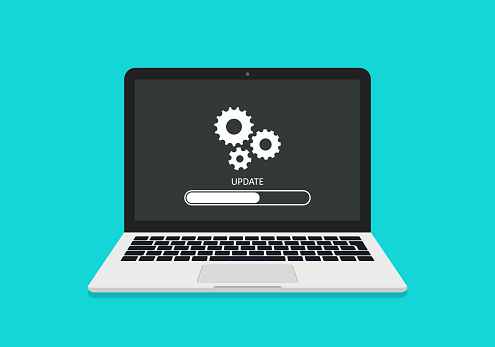

How to protect yourself on the internet
| Picture |
Description |
|  |
When users operating system is not up to date, often hacker will take it as a opportunity to find the loophole of the device to gain access to our computer. In order to prevent this from happening, user should always take the
initiative to update the operating system whenever the update is been available to us. |
|
One of the way that hacker use to get user information is by sharing their wifi to the public. When the victim connected to the hacker
shared wifi this will cause the victim information end up sending to the hacker.
|
|
When creating a new account through online, you should never reuse the same password that are from other website. Instead create a new password with number, character and symbol.
|
 |
A second layer of security known as two-factor authentication (2FA) helps users safeguard their online accounts by requiring two different forms of identification before granting access.
The password is the first requirement, and the second is a random code created by the phone. Only the user will have access to their account once two pieces of information have been enter to the website. Using 2FA has the advantage of preventing hacker phishing and brute-force attacks.
|
 |
Never click on a link that is sent to you by someone you don't know since it might include harmful malware that harms your computer or laptop. |